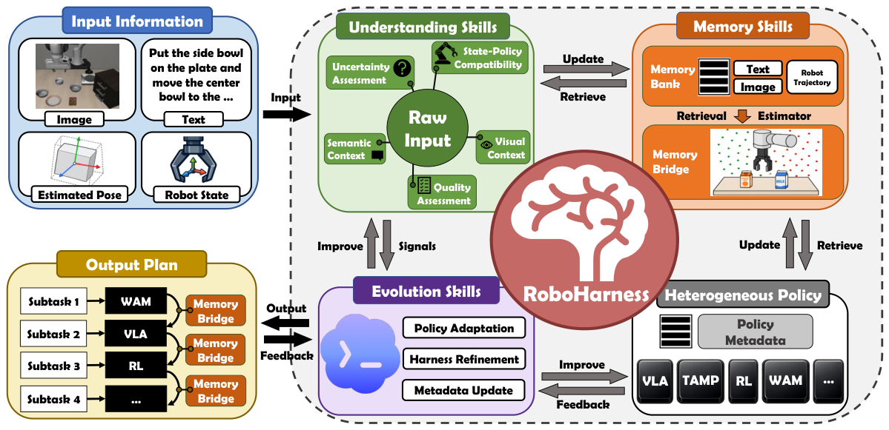
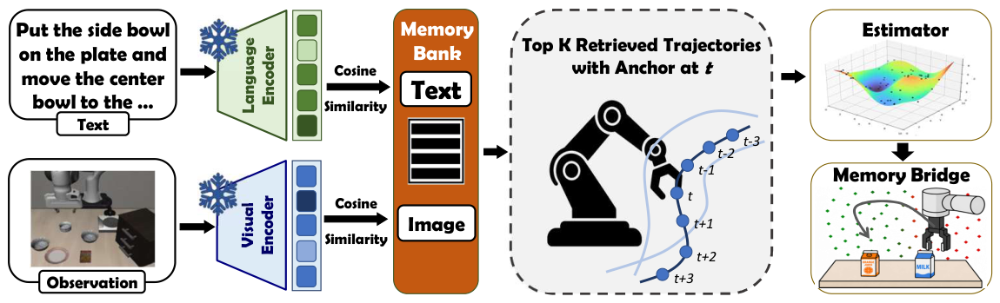

RoboHarness 深度调研笔记
速览
| 项 | 内容 |
|---|---|
| 一句话 | 把异构策略（VLA、WAM、RL、TAMP）各自封装成可复用 agentic skill，用多模态执行记忆 + 在线证据刻画"能力边界"做任务分解与路由；Memory Bridge 让策略交接时先把机器人带到下一个策略的分布内状态——免联合重训 |
| 冻结 | 全部被编排的策略（独立开发的 VLA/RL/TAMP） |
| 演化 | 理解/记忆/进化三类元技能支撑的路由与桥接 |
| 规模 | 5 个公开基准 + 500 定制任务（10 类）+ 135 次真机试验 |

① 动机：两个被忽视的问题
- 能力边界不确定：没有任何单一策略能可靠覆盖长程任务；组合异构策略时，规划器不知道每个策略"在哪好用、在哪失灵"——现有规划方法假设同构、预定义、适用性固定的技能。
- 交接分布错配：策略 A 结束时的机器人状态可能落在策略 B 的分布外，B 一上来就崩——这是异构编排特有的"handoff"难题。
② 架构：策略即技能 + 三类元技能

- 每个异构控制系统被封装成可复用 agentic skill（框架设计为通用：导航策略、MPC、WAM 都能挂）；
- harness 集成 理解 / 记忆 / 进化 三类技能：
- 理解：用多模态执行记忆 + 在线证据推理各策略的能力边界；
- 记忆：执行轨迹库，按策略与场景索引；
- 进化：capability-aware 任务分解与策略路由随证据更新。
③ 机制：Memory Bridge（本文最具复用价值的设计）
策略 B 接管前：
- 从记忆检索策略 B 相关的执行轨迹；
- 估计 B 的分布内状态区域（in-distribution region）；
- 引导机器人移动到该区域——例如把物体摆到 B 训练时习惯的方位、把夹爪回到 B 期望的开合度——然后交接。
- 插件式、免联合重训，专门治"handoff 掉点"。
④ 数据与结果
- 三个公开基准 + 500 定制任务 + 135 真机试验（论文 v3 口径为 5 benchmark / 500 tasks / 135 real）；
- 长程一致性与执行可靠性显著提升，对 OOD 条件鲁棒；capability-aware 路由与稳定编排是主要增益来源。
④A 主结果对比（论文 RMBench / BEHAVIOR-1K 表，tex 已验）
RMBench（9 任务平均成功率 %）
| Diffusion Policy | π0.5 | X-VLA | Mem-0 | RoboHarness |
|---|---|---|---|---|
| 5.8 | 10.4 | 9.8 | 42.0 | 77.2 |
（极端任务对比：Press Button 0/0/0/0 → 100；Blocks Ranking Try 6 → 80）
BEHAVIOR-1K（6 任务平均 SR / PS）： π0.5 0.05/0.26 · X-VLA 0.05/0.15 · RLC 0.23/0.42 · G0.5 –/0.54 · RoboHarness 0.43/0.66
④B 核心消融（异构策略配置，Table 配置表）
论文按基准分配异构策略组合（LIBERO/LIBERO-Plus/RMBench/BEHAVIOR-1K = π0.5+TAMP；LIBERO-LoHo/消融研究 = π0.5+Faster-WAM+RLinf-OpenVLA+TAMP 四策略全开）。核心发现是"异构编排+Memory Bridge"的系统增益（RMBench 77.2 vs 最强单策略 42.0，+35.2pp）；逐组件单独关闭的数字论文以正文/图形式给出，未提供独立消融大表（诚实标注）。
⑤ 信息流
长程指令 → 理解技能：分解为子任务（按各策略能力边界）
→ 路由：选策略 S_i → 执行 → 记录轨迹入记忆库
→ 交接时 Memory Bridge：检索 S_{i+1} 轨迹 → 估计其分布内区域
→ 引导机器人进入该区域 → 交接 → 重复直至完成
⑥ 例子
"把积木装进盒子再放到架子上"：抓取段路由给 VLA，精确插放段路由给 TAMP+RL；VLA 放手时 Memory Bridge 检索 TAMP 惯用的"盒口朝上、物体在上方 5cm"轨迹，先摆好再交接，避免 TAMP 因初始状态分布外而规划失败。
⑦ 局限（作者自陈方向）
- 实例化只用 VLA/RL/TAMP 三族，对新策略族的泛化待验证；
- Memory Bridge 依赖轨迹检索与分布估计质量，高动态环境会吃紧；
- 大而紧耦合的策略接入有架构开销。
⑧ 簇内定位
- 与 Harness VLA：Harness VLA 把"一个冻结 VLA"当原语 + 解析原语；RoboHarness 把多个异构策略都当原语，重点从"怎么调用"转到"怎么交接"；
- 与 EMERGE-Policy：同为多组件编排，EMERGE 用角色化 Sub-Agent + 图结构，RoboHarness 用能力边界 + Memory Bridge；
- 与 Orchestra：Orchestra 分离"规划/执行管理"与"动作生成"并用独立进度评估器，RoboHarness 用记忆驱动路由——两者都在回答"长程谁负责记账"。